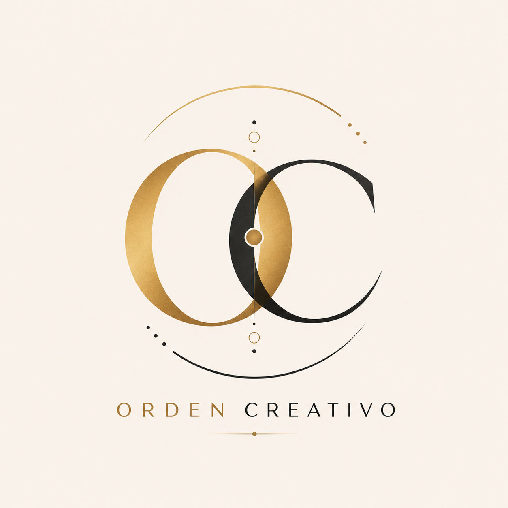

Raíz
Comprender de dónde venís.
Te invito a observar pertenencias, vínculos, memorias y aquello que forma parte de tu historia sin convertirlo en una sentencia sobre tu futuro.

Creé 22 arcanos para acompañarte a comprender, honrar y transformar tu historia. Te propongo un viaje simbólico hacia tus raíces, tus vínculos y el futuro que elegís construir.
Creé Áurea como una herramienta simbólica de reflexión inspirada en la mirada sistémica. En cada arcano busqué abrir una pregunta sobre pertenencia, memoria, vínculos, repeticiones, recursos y posibilidades.
Para mí, cada arcano es una puerta. Te invito a elegir una carta y recorrer su símbolo, su palabra y el movimiento que propone.
Te propongo una carta al día: una mirada distinta sobre aquello que estás viviendo.
Respirá. Pensá en aquello que hoy pide ser mirado y revelá una carta. Yo creé este espacio para que puedas detenerte y escucharte.
Áurea es una herramienta simbólica de reflexión y no reemplaza atención médica, psicológica ni terapéutica profesional.
Podés volver a revelar otra carta cuando quieras.
Cuando creé Áurea, partí de una idea simple: mirar no es quedar atrapado en el pasado. Es reconocerlo para poder elegir desde el presente.
Te invito a observar pertenencias, vínculos, memorias y aquello que forma parte de tu historia sin convertirlo en una sentencia sobre tu futuro.
Creo que honrar lo recibido también puede significar dejar de repetir. Por eso, en Áurea propongo preguntas para encontrar una posición más consciente.
Si querés profundizar en una pregunta personal, podés llevar la lectura a una sesión individual y trabajar el símbolo desde tu propia historia.
Yo soy Fernando Matías Acri, creador de Orden Creativo, y esta idea integral nació de mi propia visión creativa. Yo desarrollé su concepto, su universo simbólico y su dirección creativa para convertir el linaje, la memoria y la conciencia en una experiencia visual y simbólica.
En Áurea integré diseño, arte, simbolismo ancestral y una mirada contemporánea sobre el linaje. Mi intención fue convertir cada arcano en una puerta de reflexión y transformación, y crear un universo que puedas recorrer desde tu propia historia.